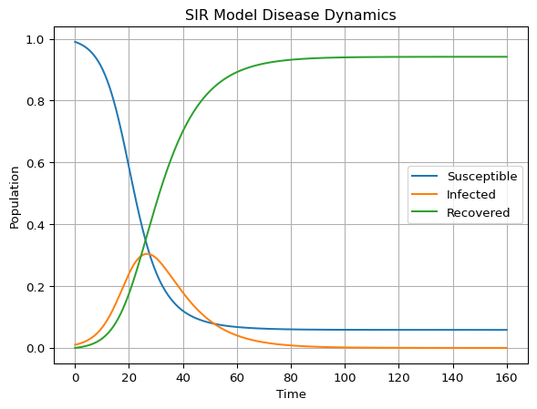

SIR Epidemic Model
Compartments, Thresholds, and Numerical Simulation
The SIR model is a classical compartmental model in epidemiology (Kermack and McKendrick 1927; Keeling and Rohani 2008). It is also a good reminder that the solve_ivp workflow applies to small systems just as naturally as to scalar equations.
We split the population into:
- \(S(t)\): susceptible
- \(I(t)\): infected
- \(R(t)\): recovered
and describes how individuals move between these compartments over time.
We will use the normalized SIR model (fractions of the population, so \(S+I+R=1\)):
\[ \begin{aligned} \dot S &= -\beta SI,\\ \dot I &= \beta SI - \gamma I,\\ \dot R &= \gamma I. \end{aligned} \tag{1}\]
Here \(\beta\) controls transmission and \(\gamma\) controls recovery.
Conservation of Total Population
For the normalized model,
\[ S(t) + I(t) + R(t) = 1. \]
That means the full state has three components, but only two are independent. The model still fits the same initial value problem structure as the scalar examples.
Implement the Right-Hand Side
The numerical solver only needs one function that returns the three derivatives.
def sir_model(t, y, beta, gamma):
s, i, r = y
dsdt = -beta * s * i
didt = beta * s * i - gamma * i
drdt = gamma * i
return [dsdt, didt, drdt]A Useful Threshold
The ratio
\[ R_0 = \frac{\beta}{\gamma} \]
is the basic reproduction number in the normalized model. When \(R_0 > 1\) and the susceptible fraction is still large, the infected compartment initially grows. When \(R_0 < 1\), infection decays instead of taking off.
Reference Implementation
A working implementation is provided in:
amlab/odes_1d/sir_model.py
The model function is sir_model(t, y, beta, gamma) and the plotting helper is plot_sir_model(...).
Render-time Figure
The figure below is generated at render-time from the reference script.
Simulate with solve_ivp()
The solver call follows the same pattern as every other ODE example in the course:
solution = solve_ivp(
sir_model,
t_span=(0, 160),
y0=[0.99, 0.01, 0.0],
args=(0.3, 0.1),
t_eval=np.linspace(0, 160, 1000),
)What to Look For
- The susceptible population decreases monotonically.
- The infected population typically rises, peaks, and then falls.
- The recovered population grows monotonically.
- Changing \(\beta\) mostly affects how fast the outbreak grows.
- Changing \(\gamma\) mostly affects how quickly the outbreak resolves.
Exploration
- Increase \(\beta\) while keeping \(\gamma\) fixed. What happens to the peak of \(I(t)\)?
- Increase \(\gamma\) while keeping \(\beta\) fixed. Does the epidemic end sooner?
- Try different initial infected fractions \(I(0)\). Do you always see an outbreak?
Run Locally
To run the standalone script and show the plot:
python amlab/odes_1d/sir_model.pyWhat’s Next?
The SIR model shows how the same solver handles several coupled state variables. The next page returns to a scalar nonlinear rate law with saturation.
References
Keeling, Matt J., and Pejman Rohani. 2008. Modeling Infectious Diseases in Humans and Animals. Princeton University Press.
Kermack, William O., and Anderson G. McKendrick. 1927. “A Contribution to the Mathematical Theory of Epidemics.” Proceedings of the Royal Society A 115 (772): 700–721. https://doi.org/10.1098/rspa.1927.0118.